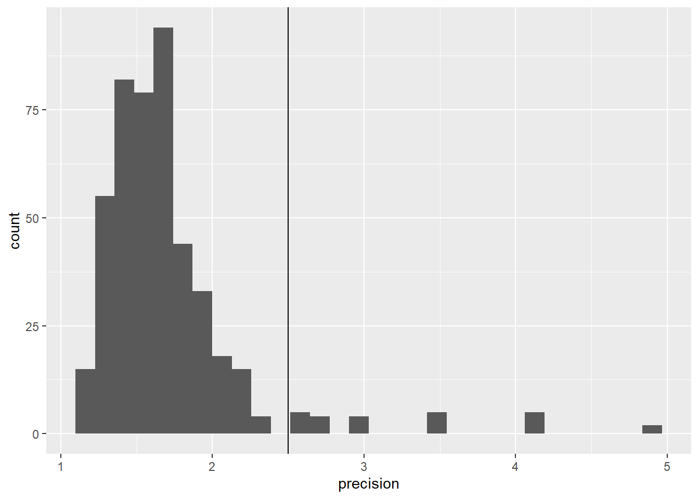
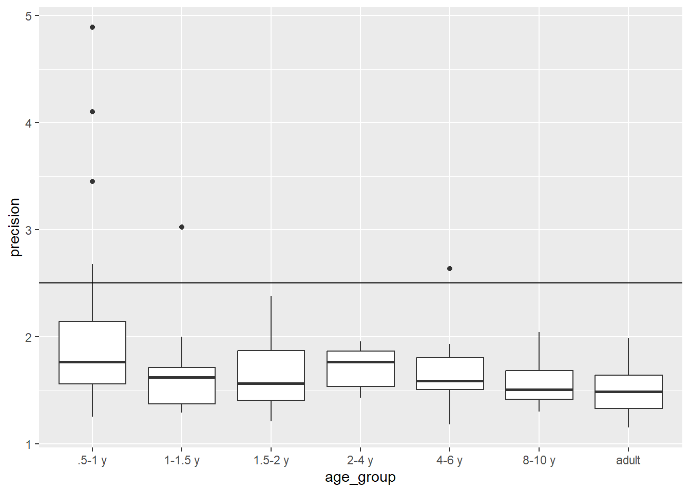
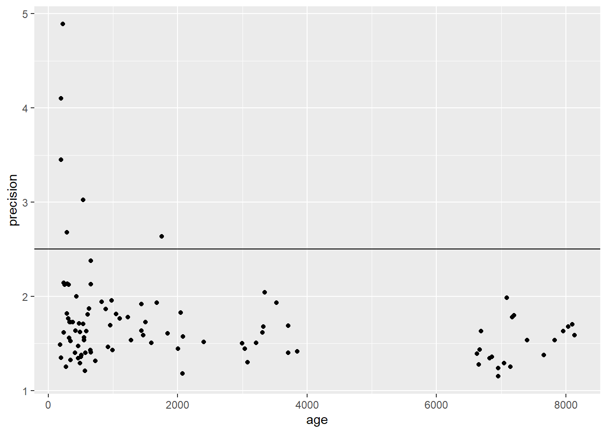
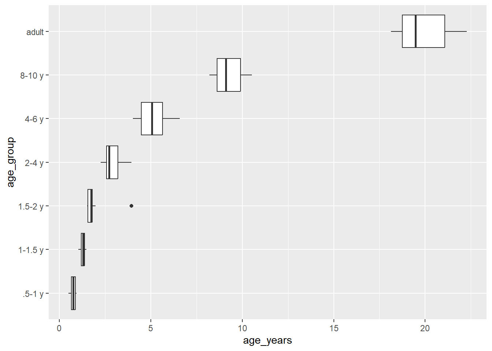
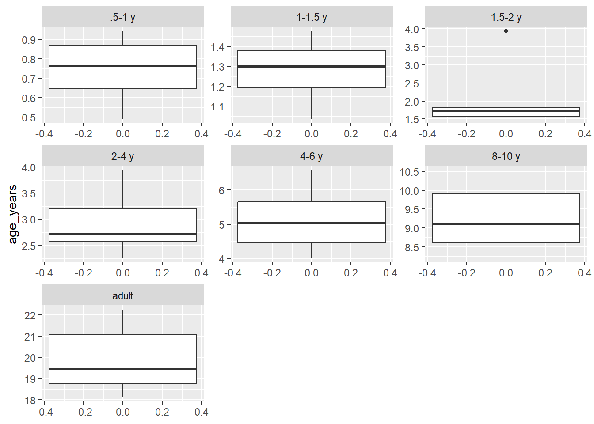

auc <- read_csv(here("data_raw", "auc_bystim.csv"))
stim_levels <- 1:7
stim_labels <- c("Fallon","Feist","Pentatonix","Science","Rube","Plane","Dogs")
auc <- auc %>% mutate(stim = factor(stim, levels = stim_levels, labels = stim_labels))Exploratory Data Analysis
SOURCE DESCRIPTION
FILE 1: auc.csv
Columns:
- stim (stimulus video, levels/labels provided below)
- id (unique participant identifier)
- age (in days)
- AUC_sal (area-under-the-curve for a saliency model)
- AUC_dist (area-under-the-curve for a distance model)
AUC values indicate how well each model predicted where participants looked when watching a video AUC values can range from 0-1 where .5 is chance and 1 is perfect prediction
FILE 2: participants_info_full_headers.csv
Columns:
- id (unique participant identifier, matches auc.csv)
- age_group (a categorical age variable with levels:
- “.5-1 y” “1-1.5 y” “1.5-2 y” “2-4 y” “4-6 y” “8-10 y” “adult”
- precision (a quality measure of the eye data, smaller is better)
- 7 columns of “Seen X” the stimulus video before the study # coded as SEEN (1), NOT SEEN (2), NOT SURE (3)
STEP 1: READ IN THE AUC DATA AND CODE STIM AS A FACTOR
Code stim as a factor.
STEP 2: READ IN THE PPT INFO DATA
Wrangle the ppt info data so that you can merge it into the auc data. Drop any data where the AUC values are missing. In the final, merged data, make the watched variable is coded as a factor with levels “seen” (1), “not seen” (2), “not sure” (3). Write the cleaned file to data_cleaned/
Read in the ppt data and rename columns to be easier to work with
ppt <- read_csv(here("data_raw","participants_info_full_headers.csv")) %>%
rename(id = "participant ID", age_group = "Age group", precision = "Precision")Each question about watching each video is a column, so pivot_longer. Then use separate to get just the video name into it’s own column
ppt_long <- ppt %>% pivot_longer(cols = starts_with("Seen"), names_to = "stim", values_to = "watched")
ppt_long <- ppt_long %>% separate(stim, into = c(NA, "stim"))Code stim and watched as factors
ppt_long <- ppt_long %>% mutate(
stim = factor(stim, levels = stim_labels, labels = stim_labels),
watched = factor(watched, levels = 1:3, labels = c("Yes","No","Not Sure")))Join the ppt data to the AUC data (by id and by stim since each participant has observations for each stim)
ds <- left_join(auc, ppt_long, by = c("id", "stim"))
ds <- ds %>% drop_na(AUC_sal:AUC_dist) #Drop participants for whom we don't have data for the DVWrite the data to file
ds %>% write_csv(here("data_cleaned","cleaned.csv"))STEP 3: EXPLORATORY DATA ANALYSIS
3A PRECISION:
Visualize the distribution of precision to see if there are values above 2.5
ds %>% ggplot(aes(x = precision)) + geom_histogram() + geom_vline(xintercept = 2.5)`stat_bin()` using `bins = 30`. Pick better value with `binwidth`.
Create a summary to figure out which participants would we need to exclude if > 2.5 meant the data are unuseable?
ds %>% group_by(id, age_group) %>%
summarize(precision = mean(precision, na.RM = T)) %>%
filter(precision > 2.5) %>% kable()`summarise()` has grouped output by 'id'. You can override using the `.groups`
argument.| id | age_group | precision |
|---|---|---|
| 52 | 1-1.5 y | 3.025000 |
| 78 | .5-1 y | 3.450000 |
| 79 | .5-1 y | 4.890000 |
| 81 | .5-1 y | 2.680000 |
| 84 | 4-6 y | 2.635714 |
| 108 | .5-1 y | 4.100000 |
ds %>% filter(precision > 2.5) %>% kable()| stim | id | age | AUC_sal | AUC_dist | age_group | precision | watched |
|---|---|---|---|---|---|---|---|
| Feist | 52 | 539 | 0.54673 | 0.50661 | 1-1.5 y | 3.025000 | No |
| Science | 52 | 539 | 0.44698 | 0.35551 | 1-1.5 y | 3.025000 | No |
| Plane | 52 | 539 | 0.49770 | 0.48446 | 1-1.5 y | 3.025000 | No |
| Dogs | 52 | 539 | 0.66759 | 0.47044 | 1-1.5 y | 3.025000 | No |
| Feist | 78 | 198 | 0.50675 | 0.44941 | .5-1 y | 3.450000 | No |
| Pentatonix | 78 | 198 | 0.57668 | 0.57997 | .5-1 y | 3.450000 | No |
| Science | 78 | 198 | 0.75457 | 0.82130 | .5-1 y | 3.450000 | No |
| Plane | 78 | 198 | 0.61133 | 0.55452 | .5-1 y | 3.450000 | No |
| Dogs | 78 | 198 | 0.49372 | 0.48506 | .5-1 y | 3.450000 | No |
| Feist | 79 | 226 | 0.60023 | 0.59731 | .5-1 y | 4.890000 | No |
| Pentatonix | 79 | 226 | 0.60949 | 0.64914 | .5-1 y | 4.890000 | No |
| Feist | 81 | 285 | 0.61159 | 0.58766 | .5-1 y | 2.680000 | No |
| Pentatonix | 81 | 285 | 0.58287 | 0.48083 | .5-1 y | 2.680000 | Yes |
| Plane | 81 | 285 | 0.53034 | 0.54342 | .5-1 y | 2.680000 | No |
| Dogs | 81 | 285 | 0.56804 | 0.56273 | .5-1 y | 2.680000 | No |
| Feist | 84 | 1757 | 0.57606 | 0.77110 | 4-6 y | 2.635714 | Yes |
| Pentatonix | 84 | 1757 | 0.54066 | 0.63486 | 4-6 y | 2.635714 | No |
| Science | 84 | 1757 | 0.65263 | 0.64523 | 4-6 y | 2.635714 | No |
| Plane | 84 | 1757 | 0.58816 | 0.57367 | 4-6 y | 2.635714 | No |
| Dogs | 84 | 1757 | 0.55541 | 0.58090 | 4-6 y | 2.635714 | No |
| Feist | 108 | 194 | 0.62370 | 0.58747 | .5-1 y | 4.100000 | No |
| Pentatonix | 108 | 194 | 0.57016 | 0.61872 | .5-1 y | 4.100000 | No |
| Science | 108 | 194 | 0.68565 | 0.76453 | .5-1 y | 4.100000 | No |
| Plane | 108 | 194 | 0.55109 | 0.57446 | .5-1 y | 4.100000 | No |
| Dogs | 108 | 194 | 0.58014 | 0.65896 | .5-1 y | 4.100000 | No |
Use a summary table and plots to investigate whether data equally precise for participants of different ages
ds %>% group_by(age_group) %>% summarize(across(precision, list(M = mean, MIN = min, MAX = max))) %>% kable()| age_group | precision_M | precision_MIN | precision_MAX |
|---|---|---|---|
| .5-1 y | 2.109234 | 1.250000 | 4.890000 |
| 1-1.5 y | 1.658714 | 1.292857 | 3.025000 |
| 1.5-2 y | 1.644224 | 1.207143 | 2.375000 |
| 2-4 y | 1.715520 | 1.428571 | 1.957143 |
| 4-6 y | 1.680247 | 1.178571 | 2.635714 |
| 8-10 y | 1.586332 | 1.300000 | 2.042857 |
| adult | 1.498571 | 1.150000 | 1.985714 |
ds %>% ggplot(aes(x = age_group, y = precision)) + geom_boxplot() + geom_hline(yintercept = 2.5)
ds %>% ggplot(aes(x = age, y = precision)) + geom_point() + geom_hline(yintercept = 2.5)
3B AGE:
Convert age to years so that it can be more easily compared to age_group. Visualize age in years by age_group to see whether participants are the correct age for their group
ds <- ds %>% mutate(age_years = age/365.25)
ds %>% group_by(id, age_group) %>% summarize(age_years = mean(age_years)) %>% ggplot(aes(y = age_group, x = age_years)) + geom_boxplot()`summarise()` has grouped output by 'id'. You can override using the `.groups`
argument.
Another option would be to facet by age group and to let the scales be “free” to get a better look
ds %>% group_by(id, age_group) %>% summarize(age_years = mean(age_years)) %>% ggplot(aes(y = age_years)) + geom_boxplot() + facet_wrap("age_group", scales = "free")`summarise()` has grouped output by 'id'. You can override using the `.groups`
argument.
Make a summary table of age in years by age group to check whether all participants’ ages are correct
ds %>% group_by(age_group) %>% summarize(min_age = min(age_years), max_age = max(age_years)) %>% kable()| age_group | min_age | max_age |
|---|---|---|
| .5-1 y | 0.4928131 | 0.9418207 |
| 1-1.5 y | 1.0376454 | 1.4757016 |
| 1.5-2 y | 1.5085558 | 3.9397673 |
| 2-4 y | 2.2614648 | 3.9397673 |
| 4-6 y | 4.0191650 | 6.5735797 |
| 8-10 y | 8.2053388 | 10.5297741 |
| adult | 18.1355236 | 22.2669405 |